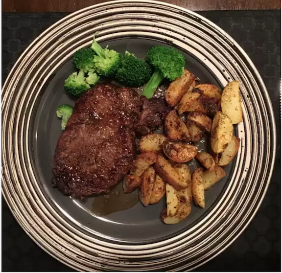

Filet Mignon

Indulgence of the finer things in life
A staple in class, the filet mignon is unchallenged in its reknown.
With this recipe, you can enjoy the finer things in life without
breaking the bank!
Ingredients
- 2 filet steaks
- Salt
- Pepper
- 1/4 cup Balsamic Vinegar
- 1/4 cup Red wine
Steps
- Season both sides of each steak with salt and pepper
- Heat a nonstick skillet over medium-high heat. Sear steaks in
the hot pan until browned, about 1 minute per side.
- Reduce heat to medium-low, and pour in balsamic vinegar and
red wine. Cover and cook for 4 minutes. Flip steaks and baste
with sauce; cover and cook for 4 minutes longer.
- Remove steaks to two warmed plates. Spoon a tablespoon of
glaze over each steak and serve immediately.